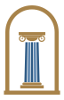
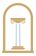

Forum Immobilien · Logo Runde 2
Basis: Konzept B (Gold-Kapitell) als Logo, Rundbogen aus C als Bildmarke für Favicon, Profilbilder, Schilder.
Bildmarke und Favicon (für alle Varianten gleich)
Für Google- und ImmoScout-Profilbild, Instagram, Verkaufsschild, Stempel und den Browser-Tab.


1 · B, klarer
Konzept B mit größerer, fetterer Unterzeile, damit sie auch klein lesbar bleibt. Säule etwas höher.

2 · B mit Bogen in der Mitte
Statt der freien Säule steht der goldene Rundbogen zwischen den Wörtern. Logo und Bildmarke sind damit ein und dasselbe Zeichen.
3 · Bogen links, einzeilig
Bildmarke links, Name in einer Zeile. Unterzeile ohne das doppelte „Immobilien“. Gut für Briefkopf und Kopfzeile der Website.
 ☰
☰4 · Bogen links, gestapelt
Konzept C aufgeräumt: kompakter Block, Unterzeile ohne Doppelung. Gut für Schilder, Visitenkarten, Social Media.

5 · B, Unterzeile über volle Breite
Wie Variante 1, aber ohne Haarlinien: Die Unterzeile läuft über die ganze Breite wie im heutigen Logo und wird dadurch am größten.
 ☰
☰